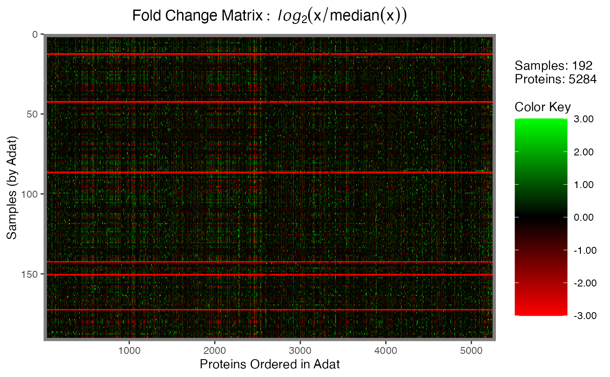
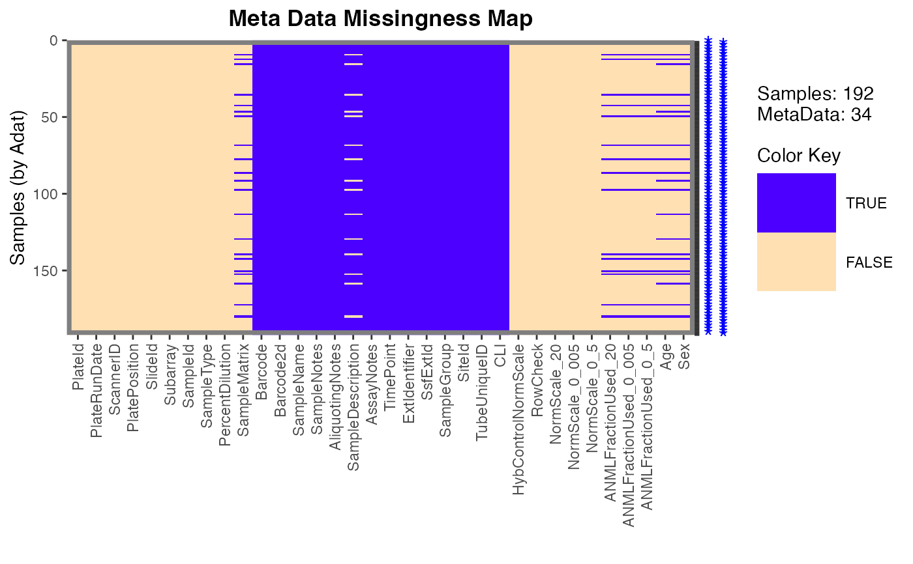
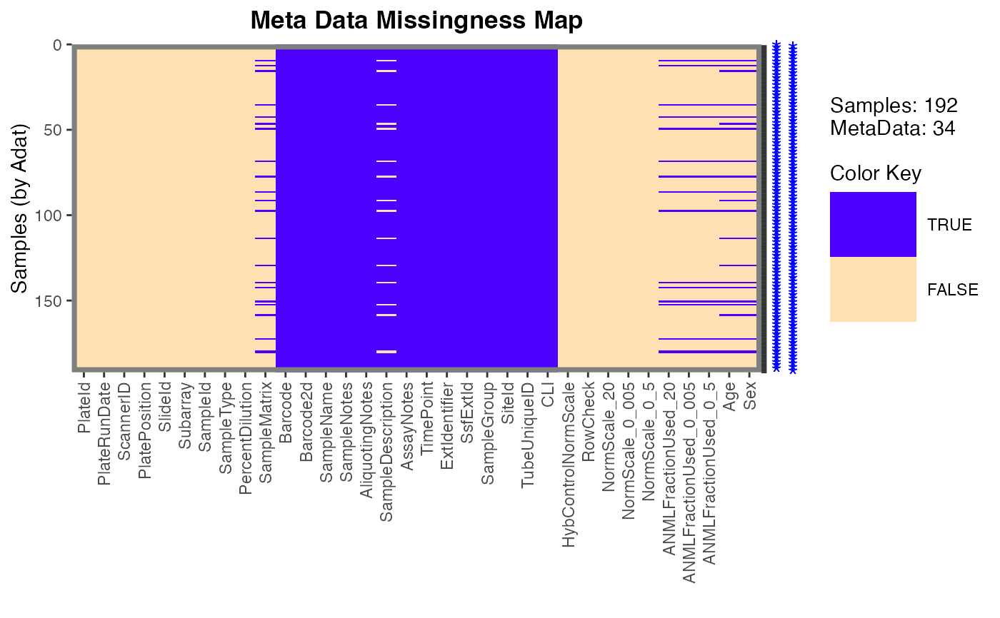

Plotting function for objects of the foldchange_matrix,
outlier_map, or missingness_map classes. Produces a
heatmap-style image using ggplot2 syntax, for objects
produced by one of calcFoldchangeMatrix(),
calcOutlierMap(), or calcMissingnessMap().
Usage
# S3 method for Map
plot(
x,
color.scheme = NULL,
legend.ticks = 7,
gridlines = NULL,
gridlinecol = "red",
gridlinelwd = 0.5,
gridlinelty = 2,
main = NULL,
y.lab = NULL,
x.lab = NULL,
type = c("foldchange", "outlier", "missingness"),
flags = NULL,
legend.width = 1,
legend.height = 2,
filename = NULL,
plot.width = 14,
plot.height = 8,
plot.scale = 1,
...
)Arguments
- x
An object of class:
foldchange_matrixoutlier_mapmissingness_map
- color.scheme
Which color scheme to use. Typical choices include:
viridis::viridis()viridis::magma()
- legend.ticks
How many ticks to place on the color legend.
- gridlines
Numeric vector or logical. Indicates where to draw the horizontal grid lines that can be used to separate samples (rows). This should be a vector of the cumulative sum of the horizontal lines to be drawn, typically something like
cumsum(table(data$Sex)). Alternatively,TRUEcan be passed whereby the lines are determined by the "class.tab" element ofx$class.tab(if possible).- gridlinecol
Color of the gridlines.
- gridlinelwd
Width of the gridlines.
- gridlinelty
Line type of the gridlines.
- main
Character. Main title for the plot. See
ggtitle()forggplot2style graphics.- y.lab
Character. Optional string for the y-axis. Otherwise one is automatically generated (default).
- x.lab
Character. Optional string for the x-axis. Otherwise one is automatically generated (default).
- type
Character. Currently one of:
"foldchange","outlier", or"missingness". This argument is determined by object class and typically should not have to be passed by the user if called via the intended S3plotmethod.- flags
Numeric in
[0, 1]. For an"outlier_map", the proportion of the analytes (columns) for a given sample that must be outliers for a flag to be placed at the right-axis, thus flagging that sample. For"missingness_map"class, the percent of "missingness" (NAs) of the clinical meta data. IfNULL(default),0.05(5%) is selected.- legend.width
Width for the color legend.
- legend.height
Height for the color legend.
- filename
Optional. If provided, the plot will be written to a file. The file name must also include the desired file type extension; this will be used to determine the file type, e.g. a file named
foo.pngwill be saved as aPNG. Seeggsave()for a full list of file type (device) options.- plot.width
If
"filename != NULL", the width of the plot image file.- plot.height
If
"filename != NULL", the height of the plot image file.- plot.scale
If
"filename != NULL", the scale of the plot image file.- ...
Arguments required by the
plot()generic. Currently unused.
See also
ggplot(), geom_raster()
Other Calc Map:
calcFoldchangeMatrix(),
calcMissingnessMap(),
calcOutlierMap(),
getFlaggedIds()
Examples
data <- SomaDataIO::example_data
# Fold-change
FC <- calcFoldchangeMatrix(data)
plot(FC)

# Outlier
OM <- calcOutlierMap(data)
plot(OM, flags = 0.05)

# Clin Data Missingness
meta <- SomaDataIO::getMeta(data)
MM <- calcMissingnessMap(data[, meta])
plot(MM, flags = 0.05)
